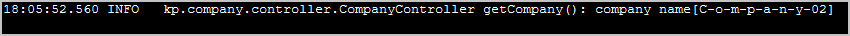

common package
kp.company.domain server package
kp.company client package
kp.company.client
common package
kp.company.domain server package
kp.company client package
kp.company.clientJava source code:
common package
kp.company.domain
server package
kp.company
client package
kp.company.client
The example uses Spring Boot and Spring MVC.
Actions:

 1. With batch file "01 MVN (server) run.bat" start the REST server.
1. With batch file "01 MVN (server) run.bat" start the REST server.
2. With batch file "02 MVN (client) run.bat" execute the REST client application.
3. With batch file "03 CURL call server.bat" execute the curl requests to the server.
4. Open in web browser the file "links.html". On that page there are links to execute.
5. Execute link Consuming REST Using 'AngularJS' JavaScript Framework.
6. Execute link Consuming REST Using 'jQuery' JavaScript Library.
Second action result: console log from client call.

Second action result: console log from server.